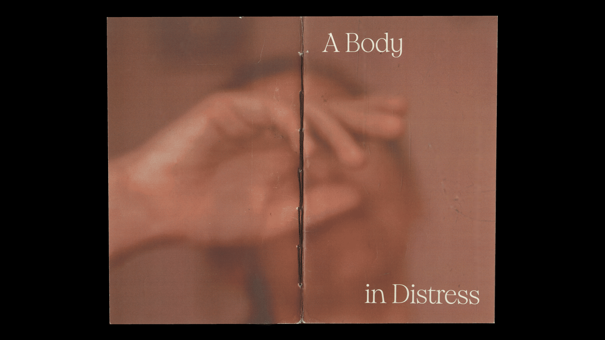
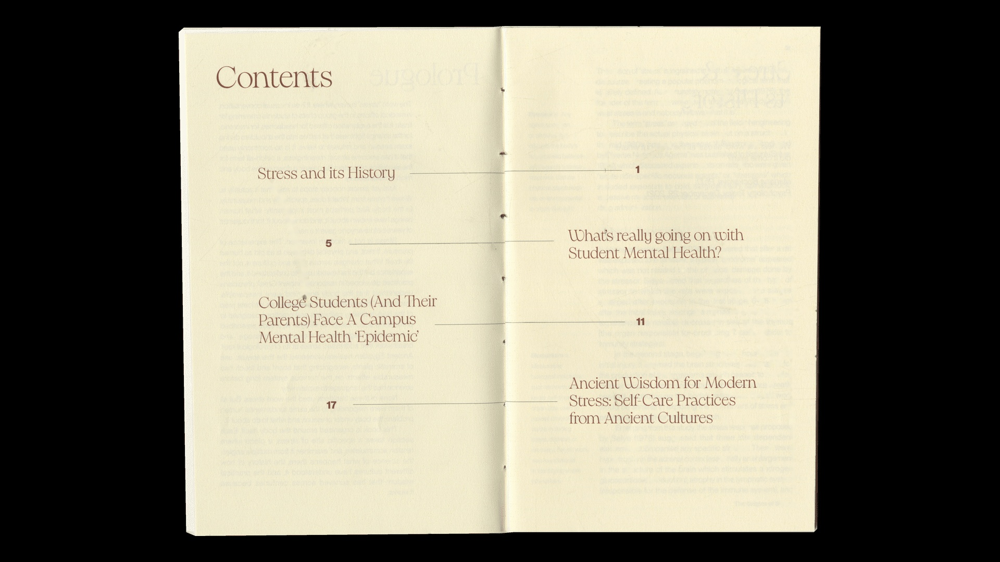
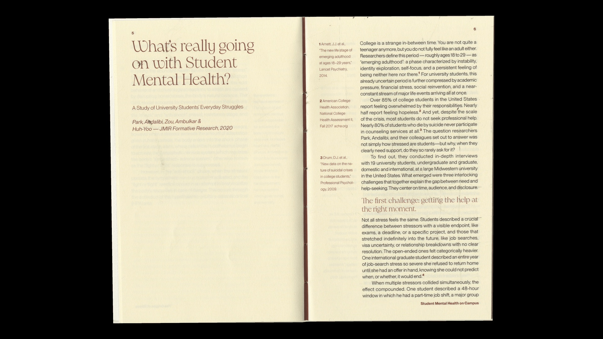

A Body in Distress
Overview
A book on the history of stress, student mental health, and different ways of caring for the body.
Description
Stress is a word we use often, even when we mean very different things by it. I brought historical accounts together with research on university students to look at how pressure is described, what it does to the body, and why asking for help can be difficult. The chapters also consider earlier practices of care and their understanding of the body.
I paired the blurred cover image with a clearly divided layout inside. Large headings introduce the chapters, and references sit beside the passages they support. I wanted the research to be easy to return to, so readers could follow an idea through the text and check where it came from.
Guiding Questions:
How has our understanding of stress changed over time?
What makes it difficult to ask for help?


